sector53 supernovae (21 total)
Each figure has three panels. The top panel shows the transient light curve, the middle panel shows the local background (estimated in an annulus), and the bottom panel shows a "background-model corrected" light curve. Details about the background model are in the README.
The vertical red line marks the time of discovery reported to TNS. Other useful metadata from TNS is in the figure title.
Note that the top and bottom panel are in magnitudes, while the middle panel is in differential flux units. The magnitudes are calibrated to the flux in the reference image used for image subtraction. Thus, flux from the host galaxy is included in these magnitudes.
3-sigma upper limits are plotted as triangles with no errorbars. A typical limiting magnitude is 19.6 in 30 minutes or 18.4 in 200 seconds (for low backgrounds).
The links allow you to download the light curve data as a text file.
More details in the README.
2022ohh
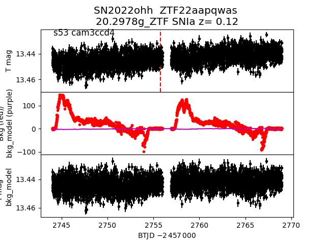
2022ngt
 2022ngb
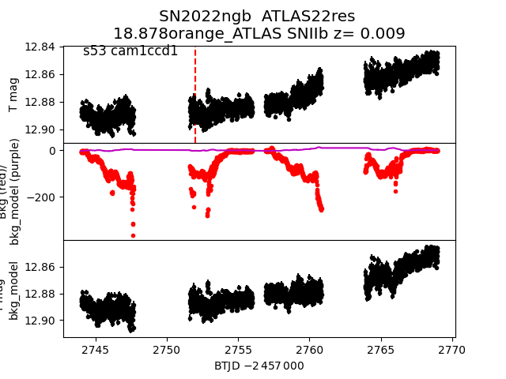
2022ojj
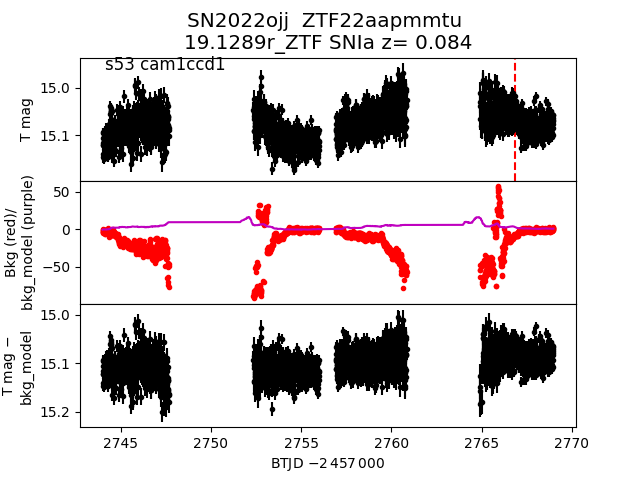
2022nab
2022ngb
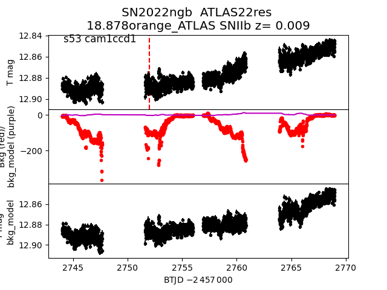
2022ojj
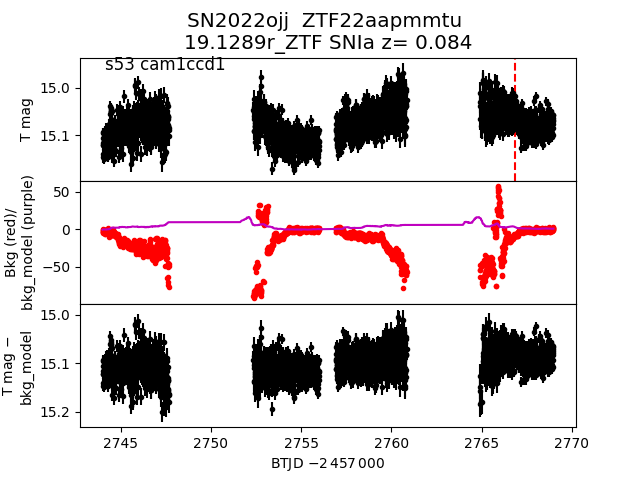
2022nab
 2022ocb
2022ocb
 2022npv
2022npv
 2022oeh
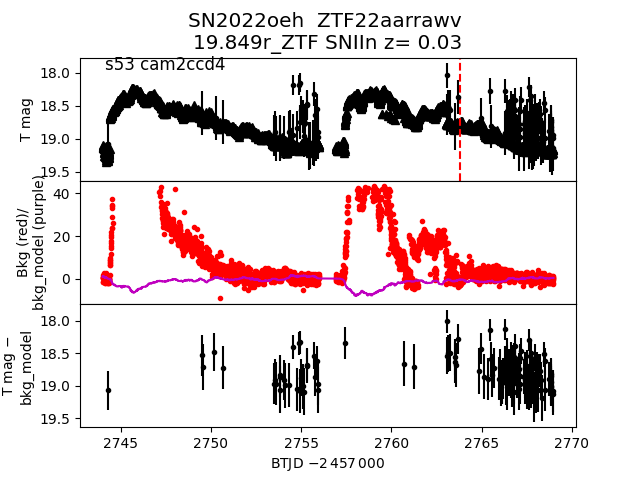
2022ney
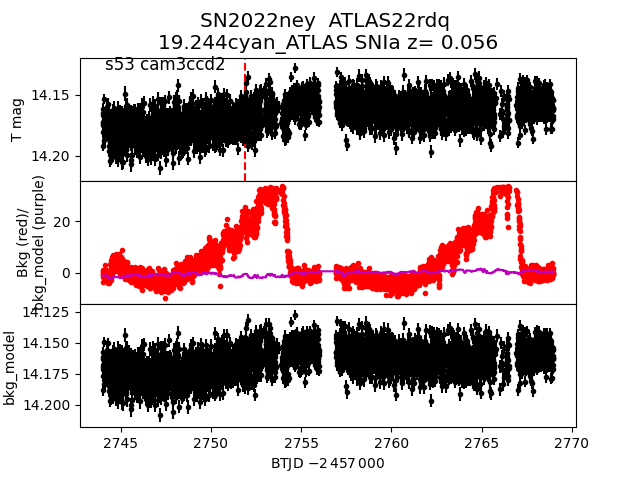
2022opl
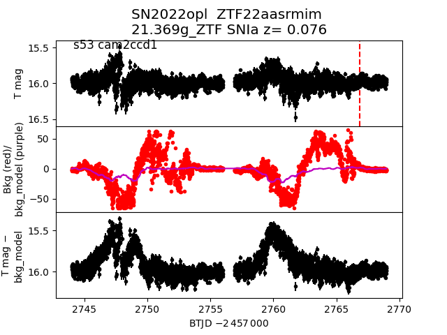
2022ohi
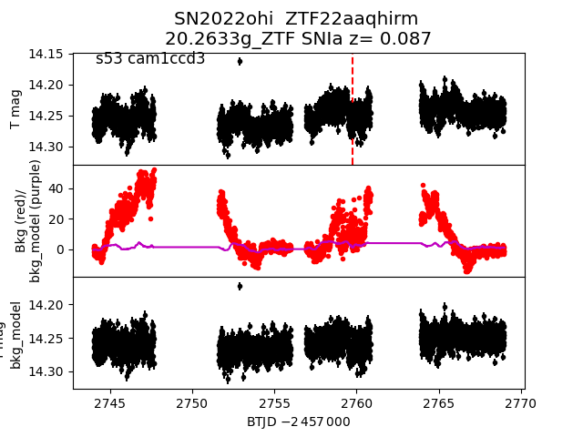
2022myi
2022oeh
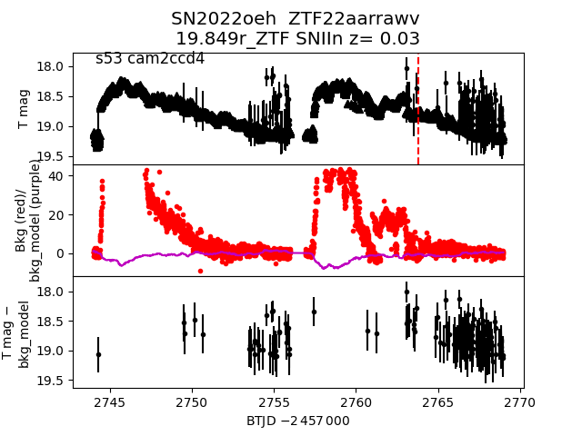
2022ney
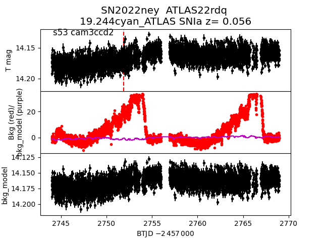
2022opl
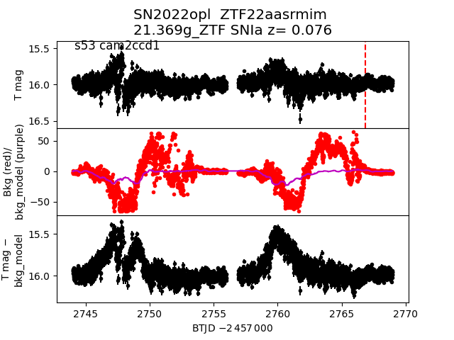
2022ohi
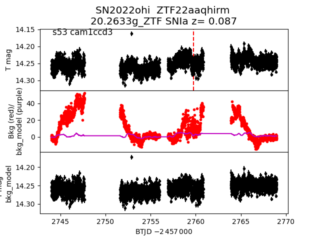
2022myi
 2022ohu
2022ohu
 2022ojr
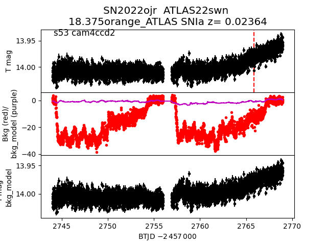
2022mzb
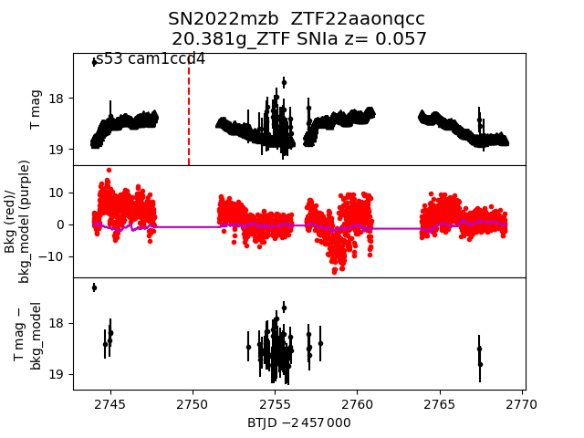
2022nxs
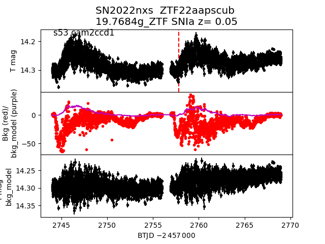
2022nid
2022ojr
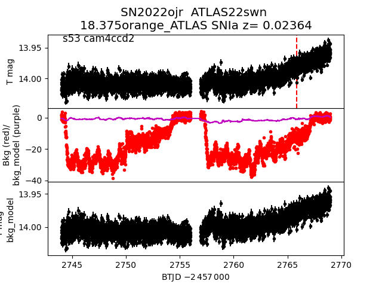
2022mzb
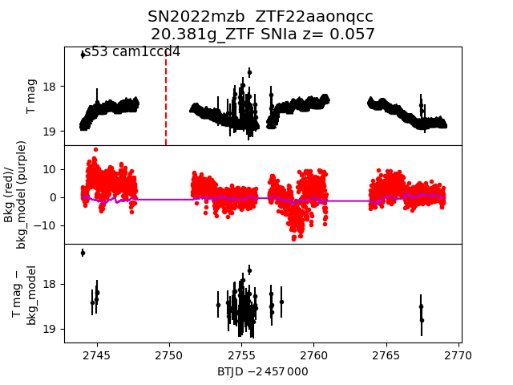
2022nxs
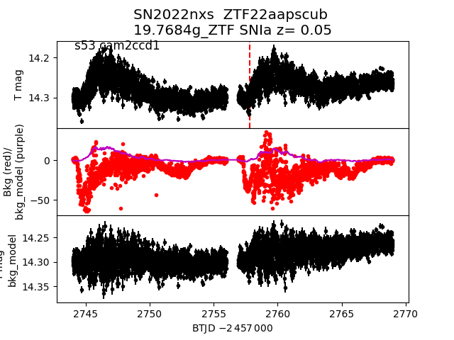
2022nid
 2022oci
2022oci
 2022ooo
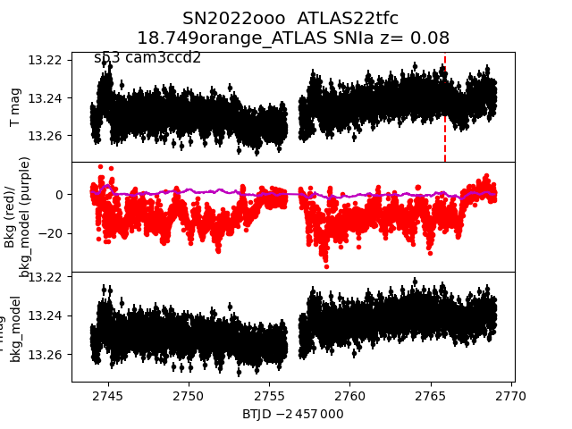
2022ngs
2022ooo
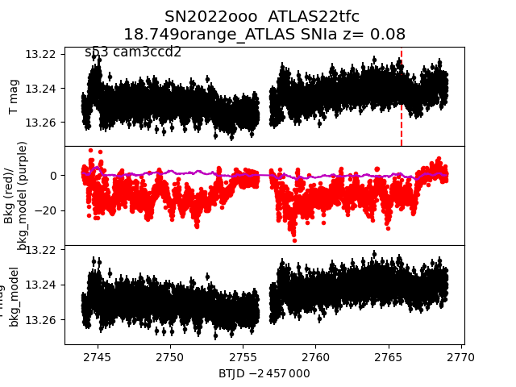
2022ngs
 2022mtp
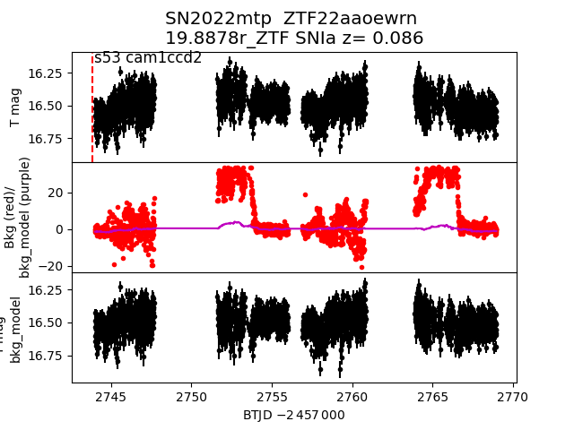
2022mtp
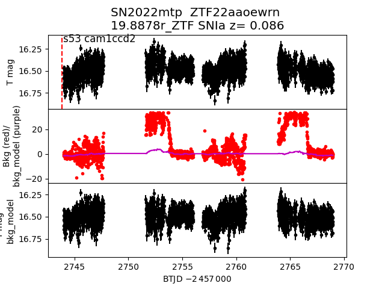